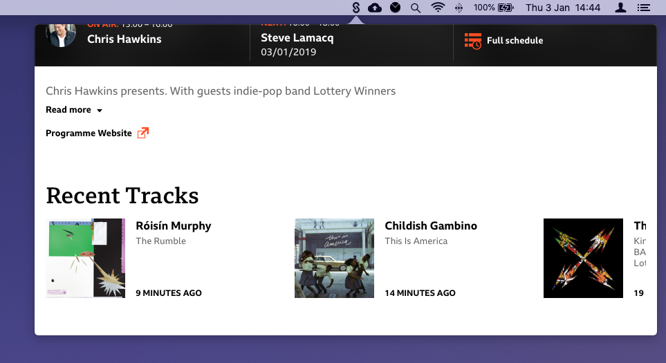

Building a BBC Sounds 'status bar' app for macOS
Richard Taylor • • 6m read
The documentation of what I discovered while building a WebKit view status bar app for macOS with native media key support controlling the playback in the WebView.
Background
I listen to the radio a lot while developing and after trying the available apps at the time I wrote a simple native status bar app a few years ago in Ruby using the RubyMotion compiler toolkit.
This allows you to simply switch between a preset list of radio streams and has media key support so you can pause/play and change station with the forward/back keys.
This is probably my most used app on the mac but it lacks a lot of features I really want and I have intended to revisit it for a while.
Having a few rare hours to spare over Christmas this year I started to have a look at what was available and determined that a WebView app of the relatively new BBC Sounds web app would be ideal, the main criteria being:
- Native status bar app
- WebKit webview of the BBC Sounds site
- Media key support for pause/play from the keyboard
Existing tools
There are a couple of projects I’d heard of that assisted you writing apps that wrap websites in web views so I thought I’d start there.
The webview golang project assists you in writing a native app with cross-platform support (windows, mac, linux) very simply, this is literally all you need:
package main
import "github.com/zserge/webview"
func main() {
webview.Open("BBC Sounds",
"https://www.bbc.co.uk/sounds/play/live:bbc_6music", 400, 600, true)
}It really couldn’t be any simpler to get started and results in a native player, job done!
The only downside to this great project is that it abstracts so much away from you there isn’t really any room for customisation, unless you want to get your hands dirty with C so it doesn’t really meet all my criteria.
The WebShell project looked like it would allow for more customisation at the expense of the cross-platform support (which isn’t essential for me).
Following the instructions and doing a little bit of configuration I had a player up and running with almost the same results as the webview app. WebShell also allows you to configure it as a status bar app and has references to the media keys in the code so I thought I’d hit the jackpot.
Unfortunately there were a number of major bugs, eg. 2 audio streams playing at the same time and the media keys not doing anything for me that meant it wasn’t going to work.
I figured it would be a good starting point though but after devling deeper into the code I realised it was doing so much more that I would need (or understand) that I wouldn’t be happy maintaining my fork, if I could even get it working as I wanted.
At this point though I was starting to understand what was needed to make it work, and had a great reference app to look at I decided to have a go building it from scratch.
Building the solution
I cracked open a new macOS app in Xcode and found this great tutorial Menus and Popovers in Menu Bar Apps for macOS that walks you through building a simple status bar app with a popover. This WeatherBar tutorial was also really useful as a second reference. I’m not going to duplicate the setup steps of these tutorials here.
The main gist of the code that gets this working (in the AppDelegate) is:
let statusItem = NSStatusBar.system.statusItem(withLength: NSStatusItem.variableLength)
let popover = NSPopover()
func applicationDidFinishLaunching(_ aNotification: Notification) {
let icon = NSImage(named: "status")
icon?.isTemplate = true
if let button = statusItem.button {
button.image = icon
button.action = #selector(togglePopover(_:))
}
}
@objc func togglePopover(_ sender: Any?) {
if popover.isShown {
closePopover(sender: sender)
} else {
showPopover(sender: sender)
}
}
func showPopover(sender: Any?) {
if let button = statusItem.button {
popover.show(relativeTo: button.bounds, of: button, preferredEdge: NSRectEdge.minY)
}
}
func closePopover(sender: Any?) {
popover.performClose(sender)
}Once the popup was showing I needed to get a WebView in there and this incredible article The Ultimate Guide to WKWebView was my frequent reference.
The main detail of the implementation here (in a WebViewController) is:
var webView: WKWebView!
override func loadView() {
let webConfiguration = WKWebViewConfiguration()
webView = WKWebView(frame: .zero, configuration: webConfiguration)
view = webView
}
override func viewDidLoad() {
super.viewDidLoad()
loadURL(URL(string:"https://www.bbc.co.uk/sounds/play/live:bbc_6music")!)
}
public func loadURL(_ url: URL) {
webView.load(URLRequest(url: url))
}At this point the content failed to load, and I discovered I needed to add a permission to the app to be a network client, apparently this is a relatively new sandbox security feature in macOS.
With the content loading we have a functional status bar player! One drawback
was that that the audio failed to play automatically until the popover was
opened. I couldn’t find a perfect solution to this but hacked in a quick
open/close on launch that worked around it in AppDelegate.
DispatchQueue.main.async {
self.showPopover(sender: self)
self.closePopover(sender: self)
}If you know of a better way of handling this please let me know!
The next part of the puzzle is getting the media keys controlling the player within the WebView.
I’ve used the SPMediaKeyTap project before in the previous player and it worked great. After looking for alternative solutions that didn’t seem to work I found the successor project MediaKeyTap for swift and it worked a treat.
The main gist of the code in AppDelegate
var webController: WebViewController?
var mediaKeyTap: MediaKeyTap?
func applicationDidFinishLaunching(_ aNotification: Notification) {
...
mediaKeyTap = MediaKeyTap(delegate: self)
mediaKeyTap?.start()
}
func handle(mediaKey: MediaKey, event: KeyEvent) {
switch mediaKey {
case .playPause:
webController?.togglePlay()
case .previous, .rewind:
webController?.start()
case .next, .fastForward:
webController?.live()
}
}This basically just forwards the media key press events to the webview controller.
One gotcha here is that macOS requires you have the accessibilty permission
for the app to receive the events. Under Security & Privacy in macOS settings you need to add the app.
The app will prompt you to do this on first launch, but you need to restart the app after adding the permission, I couldn’t find a way of responding to any changes in this setting within the running app. If you know a way please let me know.
The last step is to respond to the key events by executing javascript in the web view.
var webView: WKWebView!
public func togglePlay() {
execJS("document.getElementById(\"smphtml5iframesmp-wrapper\").contentWindow.document.getElementById(\"p_audioui_playpause\").click()")
}
public func live() {
execJS("document.getElementById(\"smphtml5iframesmp-wrapper\").contentWindow.document.getElementById(\"p_audioui_toLiveButton\").click()")
}
public func start() {
execJS("document.getElementById(\"smphtml5iframesmp-wrapper\").contentWindow.document.getElementById(\"p_audioui_backToStartButton\").click()")
}
private func execJS(_ js: String) {
webView.evaluateJavaScript(js) { (result, error) in
if let error = error {
print(error)
}
}
}And that’s it! We have a BBC Sounds app with native media key controls and now I can get back to work :) I really like having the playlist available in the app too, you can just scroll down to see what is playing and explore further.

If you have any feedback please add it to this thread on Twitter.